🎫 Billet d'entrée — trois réflexes de lecture (5 min, sans note)
Trois questions sur ce que tu sais déjà. Aucune note : c'est un aiguillage.
🎒 Je révise en 3 minutes
On n'additionne que ce qui a la même unité ET le même sens. Le tableur, lui, additionnera n'importe quoi : c'est une machine, elle ne sait pas ce que les nombres veulent dire.
Un pourcentage est une part. Sans savoir part de quoi, il ne veut rien dire — et il ne s'additionne pas à des hectares.
Une mesure vient d'un instrument. Une estimation vient d'un calcul appuyé sur d'autres chiffres. Les deux sont utiles ; seule la seconde doit dire sur quoi elle repose et ce qu'elle ne prend pas en compte.
🧰 Avant de commencer (échauffement) — les quatre gestes du tableur
Quatre gestes à faire une fois, au début, et ta séance ne se perdra pas. Tu les as peut-être déjà faits une autre année : refais-les, c'est court. Et si tu ne les as jamais faits, tout est écrit ici — tu n'as besoin de rien d'autre.
- Ouvrir. Ouvre le tableur (LibreOffice Calc), puis ouvre le fichier 📥
donnees_feux_impacts_4e.csv(clique ici pour le télécharger) (Fichier → Ouvrir…). Dans la fenêtre d'import, garde Point-virgule coché comme séparateur et valide.![Boîte de dialogue « Import de texte » de LibreOffice Calc, en français et en mode sombre, pour le fichier donnees_feux_impacts_4e.csv. En haut : Jeu de caractères, Locale « Par défaut - Français (France) », À partir de la ligne 1. Dans « Options de séparateur », le bouton « Séparé par » est sélectionné ; parmi les cases Tabulation, Virgule, Point-virgule, Espace et Autre, seule Point-virgule est cochée. En bas, l'aperçu montre les données réparties en colonnes : type_donnee, date, territoire, indicateur, valeur, unite, source, statut ; la colonne valeur affiche 0,142 puis 0,00293, écrits avec une virgule. Les boutons OK et Annuler sont en bas à droite.](Images/geste_tableur_1_ouvrir_import_csv.png)
Ce que tu dois voir : dans « Options de séparateur », la case Point-virgule cochée, et l'aperçu du bas déjà découpé en colonnes. Si c'est « Détecté (;) » qui est sélectionné, c'est bon aussi : le (;) dit que le point-virgule a été reconnu. Puis : clique OK. 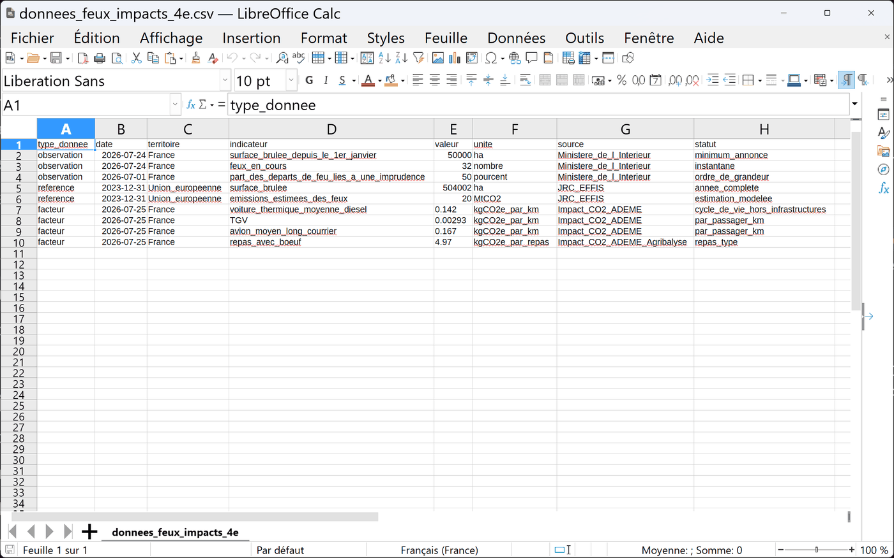
Comment savoir que c'est fait : chaque donnée est dans sa propre colonne, de A à H, avec les titres sur la ligne 1. Regarde la colonne valeur : les nombres sont collés à droite de leur cellule. C'est la preuve que le tableur les a compris comme des nombres, et non comme du texte. 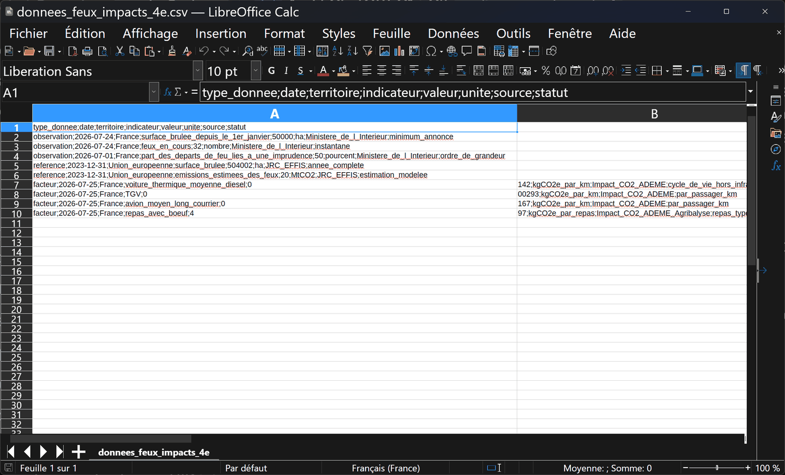
Si tu vois ceci : tes lignes sont collées dans la colonne A avec leurs points-virgules, et les dernières sont coupées en plein milieu d'un nombre — 0 d'un côté, 142 de l'autre. Le séparateur choisi n'était pas le bon : c'était la virgule, qui sert ici de virgule décimale. Ferme le fichier sans l'enregistrer (Fichier → Fermer), recommence Fichier → Ouvrir… et coche Point-virgule. 💡 Astuce — élargir une colonne
Si une colonne semble trop étroite (un mot coupé, un nombre collé à la colonne suivante), élargis-la : place le curseur sur la ligne fine entre deux lettres de colonnes (par exemple entre E et F), puis double-clique dessus — la colonne prend la largeur de son contenu. Pour toutes les colonnes d'un coup : clique sur la case vide en haut à gauche (au-dessus de la ligne 1, à gauche de la colonne A) pour tout sélectionner, puis un seul double-clic sur n'importe quelle ligne entre deux lettres suffit.
- Nommer. Fichier → Enregistrer sous… tout de suite, au format Classeur ODF (.ods), sous
4E-FEUX-TON NOM, dans Documents, dans le dossier qui porte le nom de ta classe (par exemple4E3). Si ce dossier n'existe pas encore, crée-le d'abord : dans la fenêtre d'enregistrement, ouvre Documents, clique sur Nouveau dossier, tape le nom de ta classe, valide, puis entre dedans.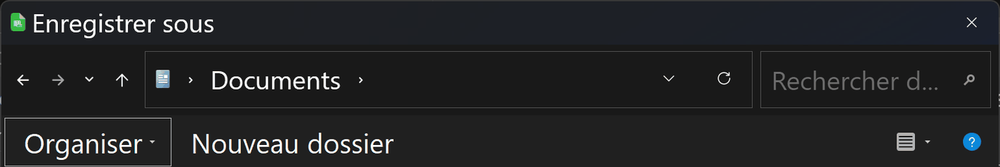
Ce que tu dois voir : le chemin, tout en haut, finit par Documents. Si la fenêtre s'ouvre ailleurs — Téléchargements, par exemple — clique sur Documents dans la colonne de gauche. Seul le haut de la fenêtre est montré ici : en dessous, tu verras la liste de tes propres dossiers. Cherche dedans celui qui porte le nom de ta classe : s'il y est, entre dedans (double-clic) et passe aux trois dernières images ; s'il n'y est pas, continue ci-dessous. 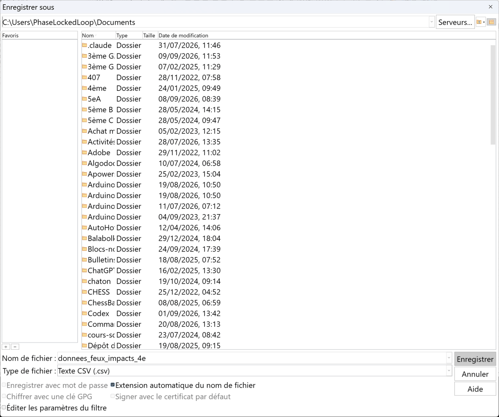
Le bouton Nouveau dossier : il est écrit en toutes lettres, dans la barre au-dessus de la liste des fichiers, juste à droite d'Organiser. Clique dessus. 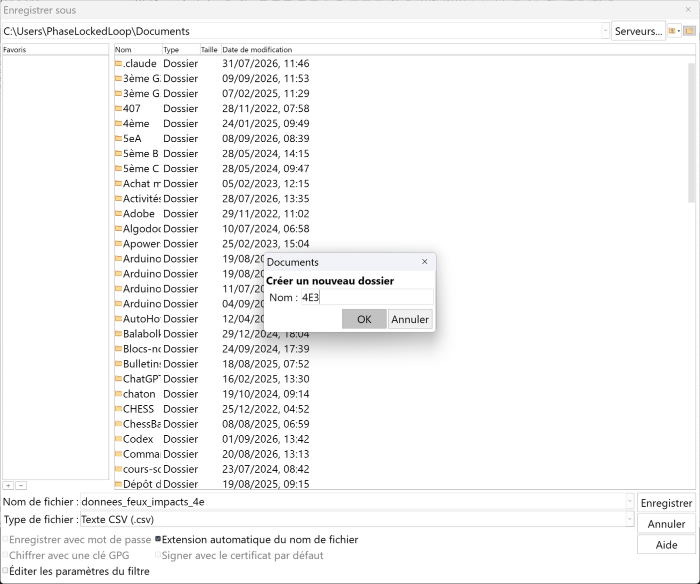
Ce que tu dois voir : une ligne apparaît dans la liste, avec une case où écrire à la place du nom. Tape le nom de ta classe, puis Entrée. 4E3 est un exemple : mets le nom de ta classe. Ici, la liste a été raccourcie à cette seule ligne ; chez toi, tes autres dossiers restent visibles autour. 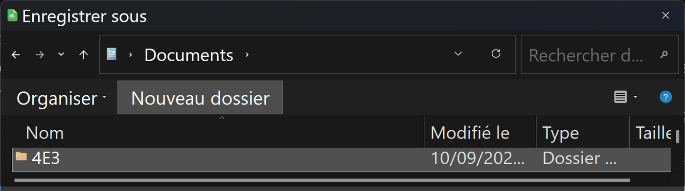
Comment savoir que c'est fait : la case où tu écrivais a disparu, et ton dossier porte son nom, avec la mention Dossier dans la colonne Type. Windows n'entre pas dedans tout seul : double-clique sur son nom pour y entrer. 4E3 est un exemple. 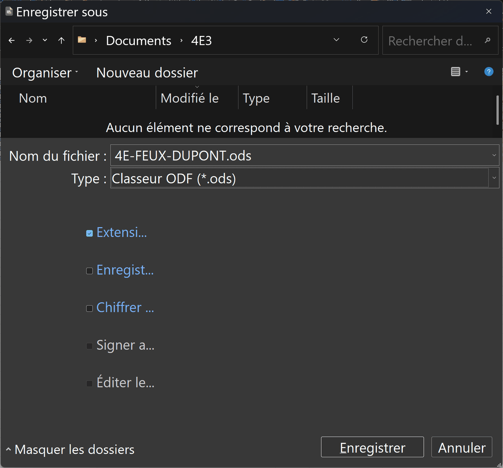
Ce que tu dois voir avant d'enregistrer : trois choses. Le chemin, en haut, finit par Documents puis le nom de ta classe ; le Nom du fichier suit la consigne ; Type : Classeur ODF (*.ods) — si tu lis encore « Texte CSV », ouvre la liste et choisis Classeur ODF. Puis : Enregistrer. DUPONT et 4E3 sont des exemples : mets ton nom et ta classe. 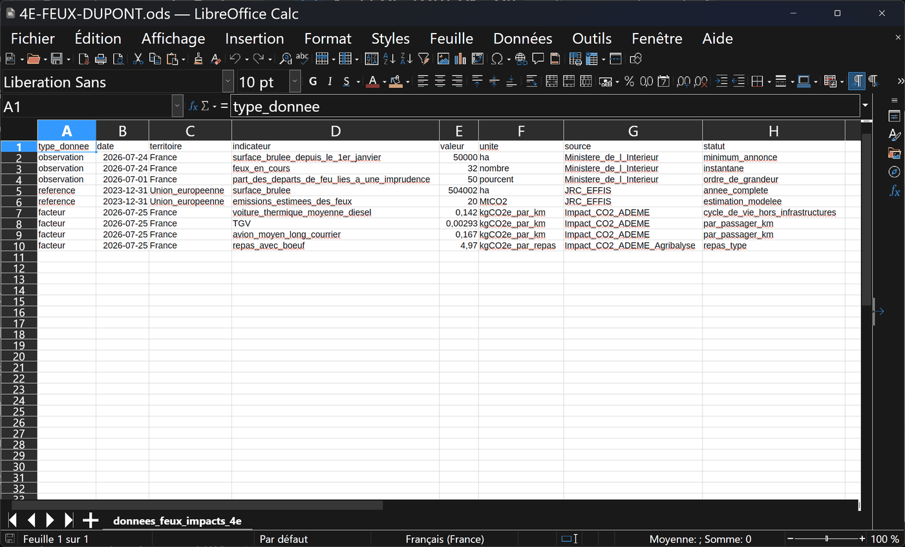
Comment savoir que c'est fait : la barre de titre, tout en haut, affiche ton nom de fichier suivi de .ods, et non plus .csv. DUPONT est un exemple. 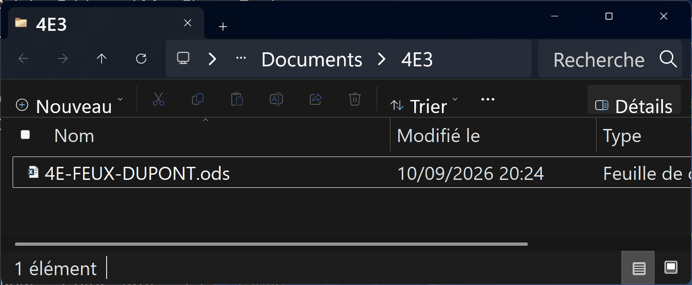
Pour vérifier, ou pour le retrouver plus tard : ouvre l'Explorateur de fichiers de Windows, va dans Documents, puis dans le dossier de ta classe : ton fichier .ods est là. Ce chemin — Documents, puis ta classe — est celui à refaire à la séance suivante. 4E3 et DUPONT sont des exemples. - Retrouver. Le tableur n'enregistre pas tout seul : Ctrl+S après chaque série de saisies. Rouvre ton fichier au début de la séance suivante pour vérifier qu'il est complet.
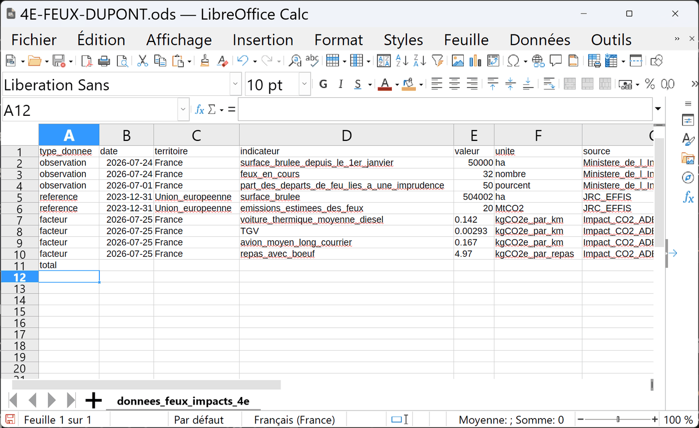
Ce que tu dois voir avant Ctrl+S : tu as tapé quelque chose (ici « total » en A11, un exemple), et en bas à gauche de la fenêtre, la petite icône de la barre d'état est rouge : ce qui est à l'écran n'est pas encore sur le disque. Le raccourci n'ouvre aucune fenêtre : c'est cette icône qui te répond. 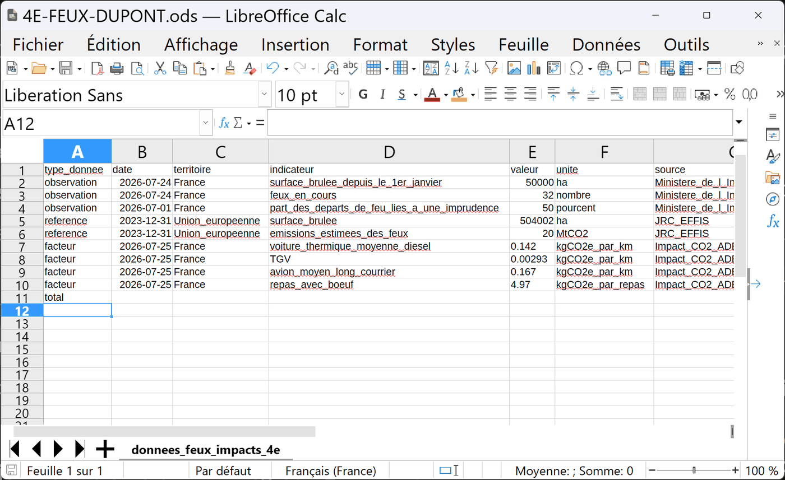
Comment savoir que c'est fait : après Ctrl+S, l'icône en bas à gauche redevient grise. Rien d'autre ne change à l'écran : c'est normal. 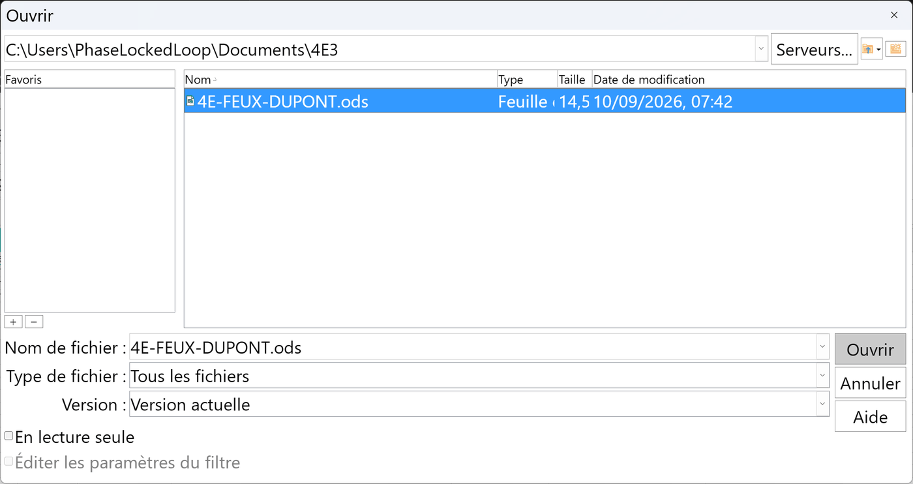
Pour rouvrir à la séance suivante : Fichier → Ouvrir…, va dans Documents, puis dans le dossier de ta classe, et choisis le fichier qui finit par .ods — pas le .csv, qui est le fichier de départ, sans ton travail. Le nom complet s'écrit en bas, dans Nom du fichier : c'est là qu'on vérifie. Le nom et le dossier sont des exemples. - Sortir. Le classeur est le rendu. D'abord, fais le graphique : sélectionne les colonnes D et E des quatre lignes
facteur(de voiture_thermique_moyenne_diesel à repas_avec_boeuf), puis Insertion → Diagramme…, garde le type Colonnes, et Terminer. Un graphique se copie dans le compte rendu, ou s'exporte en image par un clic droit.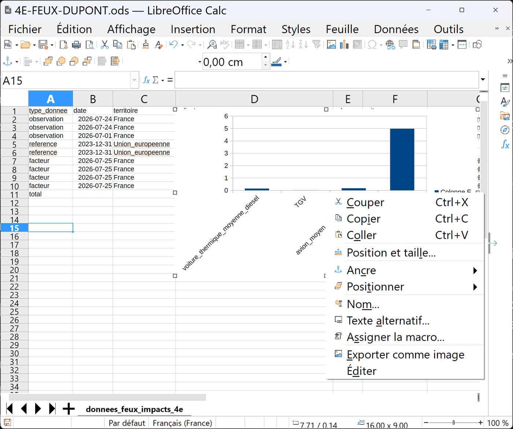
Ce que tu dois voir : un clic sur le graphique (des petites poignées carrées apparaissent autour), puis un clic droit : le menu propose Copier (pour le coller dans le compte rendu) et Exporter comme image. Le graphique montré est un exemple, construit sur les quatre facteurs. 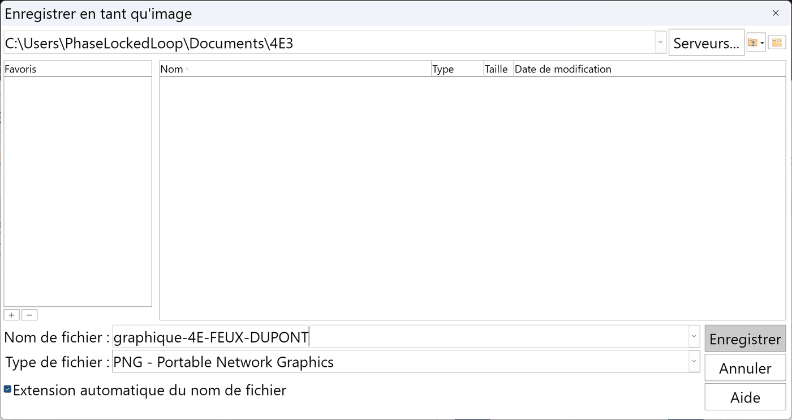
Comment savoir que c'est fait : après Exporter comme image, cette boîte s'ouvre ; garde le type PNG, donne un nom, vérifie que le chemin finit par le nom de ta classe, Enregistrer. Le fichier image apparaît dans ton dossier, à côté du classeur. Le nom et le dossier sont des exemples.
📊 Activité 1 — Lire avant de calculer (~45 min)
a) La mesure dans la cour
Relève la température de l'air à l'ombre, puis en plein soleil, au même moment.
🅱 Relevé fourni — si tu n'as pas de thermomètre
« Cour d'un collège, 14 h 10, journée ensoleillée sans vent. À l'ombre du préau : 29,4 °C. En plein soleil, au-dessus du bitume : 41,8 °C. Écart : 12,4 °C, au même moment et à dix mètres de distance. »
✅ Correction de a) — la mesure, et ce que ferait un seuil à 40 °C
Ce qu'on attend, en trois morceaux : tes deux températures (par exemple 29,4 °C à l'ombre et 41,8 °C au soleil), leur écart (41,8 − 29,4 = 12,4 °C), puis une phrase sur le seuil.
Exemple de phrase juste : « En plein soleil, le bitume de la cour dépasse déjà 40 °C un après-midi d'été : un système qui déclenche l'alerte au-dessus de 40 °C sonnerait presque tous les jours d'été, sans le moindre feu. »
Pourquoi c'est la bonne réponse : la température n'indique pas un feu, elle indique de la chaleur — et le soleil en fait autant qu'un début d'incendie, à dix mètres près. Un capteur unique, avec un seul seuil, produit des fausses alertes. C'est pour cela qu'un vrai système croise plusieurs indices (chaleur et fumée et variation rapide). Tu t'en resserviras en séance 4.
📌 Si tes propres mesures donnent un écart plus petit (temps couvert, matin) : c'est normal, note-le. La conclusion sur le seuil reste la même dès qu'il existe un jour où la cour dépasse 40 °C sans feu.
b) Lire le fichier
Ouvre 📥 donnees_feux_impacts_4e.csv dans un tableur. Repère les colonnes
date, territoire, indicateur, valeur,
unite, source et statut.
c) Ta justification
🪜 Version étayée — des phrases à compléter
- « 50 000 ha est ____ ; son unité est ____. »
- « 32 feux est ____ ; son unité est ____. »
- « 50 % est ____ ; c'est une part de ____. »
- « On ne peut pas les additionner parce que ____. »
💡 Aide de niveau 1
Pour chaque ligne du fichier, pose-toi deux questions : quelle unité ? et ça décrit quoi — un total, un instant, ou une part ?
🪜 Aide de niveau 2
Un cumul grandit toute l'année. Un état instantané peut redescendre demain. Une proportion n'a de sens qu'avec son ensemble de référence. Trois natures différentes : aucune addition possible.
✅ Correction complète
50 000 ha : une surface cumulée depuis le 1er janvier, annoncée comme un minimum — la surface réelle est au moins celle-là. Unité : l'hectare.
32 feux : un état instantané, le nombre de feux en cours au moment de l'annonce. Ce nombre aura changé le lendemain. Unité : un effectif.
50 % : une proportion — la part des départs de feu liés à une imprudence. Elle n'a de sens qu'avec son ensemble de référence : les départs de feu, en France.
📌 Les additionner serait une erreur de sens, même si le tableur accepte techniquement l'opération. Une machine calcule ce qu'on lui demande : elle ne sait pas ce que les nombres veulent dire.
La mesure de la cour : un écart de l'ordre de 10 à 13 °C entre l'ombre et le soleil, au même instant. Un seuil d'alerte fixé à 40 °C se déclencherait donc tous les jours d'été, sans le moindre feu. C'est la première raison pour laquelle un capteur unique ne suffit jamais.
⚠️ Piège classique : se fier au tableur. Il additionnera des hectares et des pourcentages sans broncher, et affichera un résultat parfaitement faux.
🧮 Activité 2 — Estimer, et dire ce que l'estimation vaut (~50 min)
Le JRC/EFFIS — le service de la Commission européenne qui cartographie les feux — indique qu'en 2023, environ 504 002 ha ont brûlé dans l'Union européenne, et que ces feux ont produit une estimation d'environ 20 Mt de CO₂.
a) Le calcul
📊 Mode opératoire — LibreOffice Calc et Excel
- Convertir 20 Mt en tonnes :
=20*1000000 - Le ratio européen 2023 :
=20000000/504002(tonnes de CO₂ par hectare) - L'appliquer à la France 2026 :
=50000*ratio - Arrondir à trois chiffres significatifs :
=ARRONDI(...;-4)pour un résultat en millions. Les chiffres significatifs sont ceux qu'on garde en partant du premier chiffre qui n'est pas zéro : 1 984 119 arrondi à trois chiffres significatifs donne 1 980 000.
b) Ton estimation, et son avertissement
🪜 Version étayée — des phrases à compléter
- « Ratio : ____ ÷ ____ ≈ ____ tonnes de CO₂ par hectare. »
- « Estimation : 50 000 × ____ ≈ ____ tonnes. »
- « Attention : cette valeur est ____. Elle ne tient pas compte de ____. »
- « Elle ne doit pas être présentée comme ____. »
💡 Aide de niveau 1
Un proxy, c'est une valeur qu'on emprunte parce qu'on n'a pas la vraie. On a le droit de s'en servir — à condition de dire qu'on l'a empruntée.
🪜 Aide de niveau 2
Ton avertissement doit répondre à trois questions : d'où vient le ratio (quel territoire, quelle année) ? Qu'est-ce qu'il ignore ? Comment ne faut-il pas présenter le résultat ?
✅ Correction complète
Ratio : 20 000 000 ÷ 504 002 ≈ 39,68 tCO₂/ha.
Estimation : 50 000 × 39,68 ≈ 1,98 million de tonnes de CO₂.
Avertissement : « Estimation par proxy européen 2023, non officielle pour la France 2026. Elle ne tient pas compte du type de végétation, de l'humidité, de la sévérité du feu, de la biomasse réellement consumée, ni du devenir du carbone après le feu. »
📌 Une estimation n'est ni une mesure, ni un mensonge. C'est un ordre de grandeur, et elle vaut exactement ce que valent les hypothèses qu'on annonce avec elle. Une estimation sans avertissement devient une affirmation : c'est là qu'elle devient fausse.
⚠️ Piège classique : écrire le résultat sans l'avertissement. Le chiffre voyagera seul — c'est toujours ce qui arrive — et deviendra « les feux français ont émis 2 millions de tonnes ».
⚖️ Activité 3 — Comparer sans confondre les périmètres (~45 min)
1,98 million de tonnes, personne ne se le représente. On traduit donc en choses connues — mais chaque facteur a son périmètre, et c'est là qu'on se trompe.
| Activité | Facteur ADEME | La question critique |
|---|---|---|
| Voiture thermique diesel | 0,142 kgCO₂e/km | le facteur inclut-il la fabrication du véhicule ? |
| TGV | 0,00293 kgCO₂e/passager-km | compare-t-on un véhicule-km ou un passager-km ? |
| Avion moyen-long courrier | 0,167 kgCO₂e/passager-km | les traînées de condensation sont-elles incluses ? |
| Repas avec du bœuf | 4,97 kgCO₂e/repas | un « repas type » représente-t-il tous les régimes ? |
Tes quatre équivalences
🪜 Version étayée — la structure est donnée
- « Voiture : ____ km. Question : ____ ? »
- « TGV : ____ passager-km. Question : ____ ? »
- « Avion : ____ passager-km. Question : ____ ? »
- « Repas : ____ repas. Question : ____ ? »
💡 Aide de niveau 1
Convertis d'abord 1,98 Mt en kg (1 t = 1 000 kg), puis divise par chaque facteur. Et recopie l'unité du facteur telle quelle dans ta réponse.
🪜 Aide de niveau 2
1,98 Mt = 1 980 000 t = 1 980 000 000 kg. Divise par 0,142 pour la voiture. Et n'oublie pas que deux des quatre facteurs sont en passager-km : ton résultat l'est aussi.
✅ Correction complète
À partir de 1,98 MtCO₂ : environ 14,0 milliards de km en voiture thermique, 677 milliards de passager-km en TGV, 11,9 milliards de passager-km en avion moyen-long courrier, ou 399 millions de repas avec du bœuf.
📌 Ces équivalences rendent une quantité plus lisible ; elles ne rendent pas les phénomènes identiques. Un feu de forêt et un trajet en voiture n'ont ni la même durée, ni les mêmes effets locaux, ni la même réversibilité.
Et les avantages ne vont jamais seuls (4e_C1.2) : la détection automatisée fait gagner du temps, et elle apporte des fausses alertes, un coût, une consommation d'énergie, et des caméras qui regardent aussi ce qui n'est pas la forêt.
⚠️ Piège classique : écrire « autant que 677 milliards de km en TGV ». Le facteur est en passager-km. Oublier le mot, c'est multiplier l'erreur par le nombre de places du train.
🎯 Activité 4 — Du nombre au besoin technique (~45 min)
👥 Qui fait quoi — et quand on échange
Deux rôles seulement, et on échange à la moitié du temps. Un rôle est un tour, pas une étiquette.
- Le pilote tient l'outil — le clavier, le capteur, le tableur. Il exécute ; il ne décide pas seul.
- Le vérificateur relit chaque nombre et chaque unité avant qu'on les écrive. Il a le droit d'arrêter le groupe.
Si tu travailles à trois ou à quatre
- Le scribe écrit la trace commune — et note aussi ce que le groupe n'a pas su faire.
- Le porte-parole explique à la classe. Il ne parle qu'avec ce que le scribe a écrit : si la trace ne suffit pas, c'est la trace qu'il faut reprendre.
| Rôle | 1re moitié | 2e moitié |
|---|---|---|
| Pilote | ||
| Vérificateur |
À recopier à chaque séance. Si personne ne change de rôle, c'est toujours le même qui apprend à tenir le clavier — et ce n'est pas celui qui en avait le plus besoin.
On sait maintenant de quelle ampleur est le problème. Reste le geste qui fait basculer du constat au projet : écrire ce que le système devra faire. Sans choisir aucun composant — c'est le Thème 2 qui s'en chargera.
| Besoin ou difficulté | Information nécessaire | Contrainte à formuler |
|---|---|---|
| Détecter tôt | température, fumée, image, vent | temps de détection maximal |
| Limiter les fausses alertes | croisement de plusieurs indices | seuil de confiance |
| Transmettre depuis une zone isolée | position, heure, niveau d'alerte | portée et continuité |
| Fonctionner longtemps | niveau de batterie | autonomie minimale |
Tes cinq exigences
🪜 Version étayée — la structure est donnée
- « Le système doit détecter ____ en moins de ____. »
- « Le système doit confirmer une alerte par ____ indices avant de ____. »
- « Le système doit transmettre ____ à une distance d'au moins ____. »
- « Le système doit fonctionner ____ sans intervention. »
- « Le système doit permettre à un opérateur de ____. »
💡 Aide de niveau 1
Commence chaque phrase par « Le système doit… » et termine-la par une valeur ou une condition qu'on peut contrôler.
🪜 Aide de niveau 2
Test : pour chaque exigence, demande-toi « comment je vérifie ? » Si tu ne sais pas répondre, l'exigence n'est pas vérifiable. Et si ta phrase contient le nom d'un composant — caméra, capteur, LoRa —, tu as écrit une solution.
✅ Correction complète
Cinq exigences possibles — d'autres formulations conviennent, pourvu qu'elles soient contrôlables et sans composant :
- Le système doit signaler un départ de feu en moins de 10 minutes après son début.
- Le système doit confirmer par au moins deux indices indépendants avant d'émettre une alerte.
- Le système doit transmettre une alerte horodatée et localisée depuis une zone sans réseau téléphonique, à au moins 5 km.
- Le système doit fonctionner 6 mois sans intervention humaine.
- Le système doit permettre à un opérateur de vérifier et d'annuler une alerte avant l'engagement des secours.
📌 Une exigence dit ce qu'il faut obtenir et comment on le vérifie. Une solution dit avec quoi. Passer de l'une à l'autre trop tôt, c'est choisir avant d'avoir cherché — et le Thème 2 n'aura plus rien à explorer.
Et l'exigence n°5 n'est pas une politesse. Une alerte automatique engage des moyens de secours réels. Le système propose ; un humain décide.
🛡️ Garde-fous humains
- Une alerte automatique doit pouvoir être vérifiée par un opérateur.
- Une caméra tournée vers une forêt ne doit pas devenir un outil de surveillance injustifiée des personnes.
- Une absence de donnée n'est pas la preuve d'une absence de feu : elle peut être une panne, une batterie vide, une zone hors de portée.
- La prévention et les comportements humains restent indispensables : la technologie ne remplace ni la vigilance ni les secours.
🗺️ Activité 5 — Justifier une évolution, sur un autre objet (~42 min)
Quatre séances sur un seul système : la détection des départs de feu. Deux gestes y ont servi : justifier une évolution par un besoin, et peser ses avantages et ses inconvénients. Un geste réussi sur un seul objet n'est pas encore acquis : refais-les sur un autre, l'arrosage du jardin partagé d'un collège, avec deux schémas des concepteurs — la bête à cornes et la carte mentale.
a) Justifier une évolution : le jardin passe de l'arrosoir au système connecté
Un autre objet, le même raisonnement. En séance 4, le système de détection des feux a évolué : d'un seuil de température seul au croisement de plusieurs indices, parce que le besoin avait changé — moins de fausses alertes. Ici, ni forêt ni feu : le jardin partagé d'un collège, qui passe de l'arrosoir à un système d'arrosage connecté. Pour justifier ce changement, tu compares deux bêtes à cornes, le schéma du besoin ; le cours, juste en dessous, le rappelle. Comme tes exigences, le nouveau but ne nomme aucune solution. Un exercice, environ douze minutes ; il se vérifie tout seul et a sa correction complète.
📘 Le cours — ce qu'il faut savoir
Rappel : la bête à cornes
- Trois questions : à qui le produit rend-il service ? sur quoi agit-il ? dans quel but ?
- Le but, écrit avec un verbe à l'infinitif et sans solution, est la fonction d'usage de l'objet.
Quand le besoin évolue, l'objet évolue
- Un besoin évolue avec la façon de vivre (les vacances, le travail loin de chez soi), avec une invention ou une innovation qui rend possible ce qui ne l'était pas, et avec le développement durable (économiser l'eau, l'énergie).
- Pour justifier l'évolution d'un objet, on compare les bêtes à cornes d'avant et d'après, partie par partie. Souvent, c'est le but qui s'enrichit : « arroser les plantes » devient « arroser les plantes, même en l'absence de la gardienne, sans gaspiller l'eau ».
- Une panne ou la mode ne justifient pas une évolution : un objet cassé se remplace par le même.
Du besoin aux caractéristiques
- Une caractéristique décrit un modèle et se compare d'un modèle à l'autre : une capacité, une consommation, une durée, une résistance.
- Chaque partie du besoin appelle une caractéristique à comparer :
| Partie du besoin | Caractéristique à comparer | Unité |
|---|---|---|
| « même en l'absence de la gardienne » | l'autonomie | jours |
| « sans gaspiller l'eau » | la consommation d'eau | litres par jour |
| « à qui ? » la gardienne, qui règle le système | la facilité de réglage | minutes pour régler |
- Le programme cite aussi des critères de choix valables pour presque tous les objets : la qualité, l'efficacité énergétique, la durabilité, la recyclabilité.
- On écarte ce qui ne sert pas le besoin (la couleur, la marque, un bouton décoratif) : si on le change, l'objet répond tout aussi bien.
Le cours complet, avec les schémas et les mots : la synthèse.
Exercice 1 — Le besoin évolue : de l'arrosoir au système connecté
📖 Les mots de cet exercice
- besoin
- ce qui manque à quelqu'un, ou ce qui lui est nécessaire. C'est le point de départ de tout objet technique : on fabrique ou on choisit un objet parce que quelqu'un en a besoin.
- bête à cornes
- le nom courant du schéma qui exprime le besoin : deux cases en haut (à qui ? sur quoi ?), le produit au milieu, le but en bas. Sa grande courbe fait penser aux cornes d'un taureau.
- évolution d'un objet
- le passage d'un objet à un autre, plus récent, qui répond à un besoin qui a changé.
- justifier
- donner la raison, preuve à l'appui.
- système d'arrosage connecté
- un système qui arrose seul les plantes, à l'heure choisie, et envoie des nouvelles sur un téléphone.
- carême
- en Martinique, la saison sèche du début de l'année : il pleut peu, l'eau est précieuse.
- cuve
- un grand réservoir qui recueille l'eau de pluie du toit.
- gaspiller
- utiliser plus qu'il ne faut, et perdre le reste.
📝 Ce que montre le schéma, en mots
- À qui ? La gardienne du jardin.
- Sur quoi ? Les plantes du jardin.
- Au centre : l'arrosoir.
- Dans quel but ? Arroser les plantes du jardin.
Au jardin partagé du collège, Mme Joseph, la gardienne, arrosait chaque matin avec un arrosoir. Deux choses ont changé : pendant les vacances, plus personne ne vient au jardin ; et en carême, la saison sèche, l'eau de la cuve devient rare. Le jardin s'équipe donc d'un système d'arrosage connecté. Ci-dessus, la bête à cornes de l'arrosoir ; plus bas, celle du nouveau système, qui n'a pas encore de but.
Pour justifier l'évolution d'un objet, on compare ce qu'on lui demande avant et après. Compare les deux bêtes à cornes partie par partie, puis écris le nouveau but : un verbe à l'infinitif, sans nommer de solution (ni capteur, ni pompe, ni smartphone). Enfin, dis pourquoi le jardin a changé d'objet.
✅ Tu as réussi si… quatre comparaisons justes, un but qui dit « même sans la gardienne » et « sans gaspiller l'eau » sans nommer de solution, et la bonne raison de l'évolution.
- ton but commence par un verbe à l'infinitif (arroser…)
- il dit que l'arrosage se fait même sans la gardienne (absence, vacances)
- il dit que l'eau ne doit pas être gaspillée
🪜 Version étayée : des débuts de phrase pour t'aider
- Arroser les plantes du jardin même quand …, sans …
- Arroser … pendant les vacances, en n'utilisant que …
💡 Aide 1 — pour démarrer
Compare les deux schémas case par case, comme dans un jeu des sept différences. Puis relis l'histoire : qu'est-ce que l'arrosoir ne permet plus de faire ?
💡 Aide 2 — le raisonnement pas à pas
À qui ? → la gardienne, dans les deux → pareil.
Sur quoi ? → les plantes du jardin, dans les deux → pareil.
Le but de l'arrosoir → « arroser les plantes » → il demande que quelqu'un soit là.
Les vacances → personne au jardin → le but doit dire : même en l'absence de la gardienne.
Le carême → l'eau est rare → le but doit dire : sans gaspiller l'eau.
Nouveau but = verbe + les plantes + l'absence + l'eau, sans aucune solution.
🪜 Version étayée : des débuts de phrase pour t'aider
- Dans cette nouvelle situation, je pose la même question que dans l'aide 2 : …
- Ma réponse : … parce que …
🔍 Correction de l'exercice jumeau
À qui ? → l'élève, pareil. Sur quoi ? → ses affaires de classe, pareil. Le but change : « transporter ses affaires de classe » devient « transporter ses affaires de classe sans se faire mal au dos ». Les roulettes sont la solution : elles n'entrent pas dans le but.🔍 La correction complète, et pourquoi
📌 À retenir : pour justifier l'évolution d'un objet, on compare les bêtes à cornes d'avant et d'après : la partie qui change dit quel besoin nouveau l'objet doit satisfaire.
⚠ Le piège classique : justifier l'évolution par la nouveauté (« c'est plus moderne ») ou par une panne, au lieu du besoin qui a changé.
🐂 Ces exercices viennent de l'atelier de 4e « Le besoin » : ce que tu fais ici s'y retrouve, avec un exercice pour passer du besoin aux caractéristiques, et le QCM de l'atelier.
b) Peser le pour et le contre : la carte mentale de l'arrosage connecté
Le même jardin, cette fois pour peser le pour et le contre. En séance 3, la détection automatisée des feux avait ses deux faces : du temps gagné, mais aussi des fausses alertes, un coût, de l'énergie consommée. L'arrosage connecté est un autre objet, et il a lui aussi ses avantages et ses inconvénients. Pour les ranger face à face sans rien oublier, on dessine une carte mentale : complète celle du club jardin, puis corrige la carte mal faite d'un élève. Deux exercices, environ un quart d'heure chacun ; chacun se vérifie tout seul et a sa correction complète.
📘 Le cours — ce qu'il faut savoir
Organiser des arguments sur une évolution
- Au centre : l'évolution étudiée (de l'arrosoir à l'arrosage connecté).
- Deux branches face à face : Avantages et Inconvénients. D'autres branches peuvent dire ce qui change et pour qui.
- Un même fait peut être un avantage pour l'un et un inconvénient pour l'autre : on écrit pour qui.
Avantage, inconvénient ou hors sujet ?
- Avantage : ce que l'évolution apporte de mieux (de l'eau économisée, du temps gagné…).
- Inconvénient : ce qu'elle coûte ou rend fragile (l'argent, l'énergie, les pannes, la dépendance au réseau, les déchets…).
- Hors sujet : une phrase vraie avant comme après l'évolution. Elle reste dehors.
Une carte lisible
| À faire | À éviter |
|---|---|
| le sujet au centre | un titre vague (la classe, la date) |
| un mot sur chaque branche, la couleur en plus | une branche reconnue à sa seule couleur |
| des mots-clés dans les feuilles | des phrases entières |
| une branche par famille | une branche « Divers » fourre-tout |
| chaque idée dans sa branche | un avantage rangé dans les inconvénients |
Ce qu'elle ne montre pas
- Pas de flèches, pas d'ordre : ce n'est pas un défaut. Pour montrer ce qui circule ou dans quel ordre, on prend une chaîne d'énergie, une chaîne d'information ou un algorigramme.
- Elle ne fait pas partie du cahier des charges : elle aide à préparer et à débattre, elle n'exige rien de l'objet.
Le cours complet, avec les schémas et les mots : la synthèse.
Exercice 2 — Les avantages et les inconvénients de l'arrosage connecté
📖 Les mots de cet exercice
- évolution technologique
- le passage d'une ancienne façon de faire à une nouvelle, grâce à un objet ou à un programme (ici : de l'arrosoir à l'arrosage connecté).
- avantage
- ce que l'évolution apporte de mieux, à quelqu'un ou à quelque chose.
- inconvénient
- ce que l'évolution coûte, fait perdre ou rend fragile.
- hors sujet
- une phrase qui peut être vraie, mais qui ne répond pas à la question posée.
- connecté
- relié à un réseau (ici le wifi du collège) pour envoyer ou recevoir des informations.
- capteur d'humidité
- un composant planté dans la terre, qui mesure si elle est sèche ou mouillée.
Avant, au jardin partagé du collège, les élèves du club arrosaient à l'arrosoir. Depuis la rentrée, un système d'arrosage connecté s'en charge : un capteur d'humidité mesure la terre, une pompe prend l'eau de la cuve, et la gardienne, Mme Joseph, reçoit des nouvelles sur son téléphone. Le club prépare une carte mentale pour en débattre.
Un avantage, c'est ce que l'évolution apporte de mieux ; un inconvénient, ce qu'elle coûte ou fait perdre. Complète les feuilles vides des branches Avantages et Inconvénients avec les étiquettes de la liste : tes choix s'écrivent dans la carte. Deux étiquettes sont hors sujet : elles restent dehors, et tu dis pourquoi. Enfin, écris ta propre feuille : un autre inconvénient, en quelques mots.
✅ Tu as réussi si… deux avantages et deux inconvénients bien placés, la bonne raison pour le hors-sujet, et une feuille courte qui dit ce que le système coûte ou fait perdre.
- ta feuille est courte : quelques mots, pas plus de deux lignes de la carte
- elle dit ce que le système coûte, fait perdre ou rend fragile
🪜 Version étayée : des débuts de phrase pour t'aider
- Il faut … (changer, réparer, payer) …
- Les élèves … (venir, regarder) …
💡 Aide 1 — pour démarrer
Pour chaque étiquette, pose la question : « est-ce que l'arrosage connecté change quelque chose, en mieux ou en moins bien ? » En mieux → Avantages. En moins bien → Inconvénients. Rien ne change → hors sujet.
💡 Aide 2 — le raisonnement pas à pas
« n'arrose que si la terre est sèche » → moins d'eau perdue qu'à l'arrosoir → avantage.
« Mme Joseph suit tout sur son téléphone » → elle sait ce qui se passe sans venir → avantage.
« la pompe a besoin d'électricité » → l'arrosoir n'en avait pas besoin → inconvénient.
« s'arrête si le réseau wifi est coupé » → le système devient fragile → inconvénient.
« les plantes ont besoin d'eau » → vrai avant comme après → hors sujet.
🪜 Version étayée : des débuts de phrase pour t'aider
- Dans cette nouvelle situation, je pose la même question que dans l'aide 2 : …
- Ma réponse : … parce que …
🔍 Correction de l'exercice jumeau
Avantage : un badge perdu se désactive (plus besoin de changer la serrure). Inconvénient : la porte ne s'ouvre plus en cas de panne de courant. Hors sujet : « la salle de technologie est au premier étage » — vrai, mais rien à voir avec l'évolution.🔍 La correction complète, et pourquoi
📌 À retenir : pour juger une évolution technologique, on range ses avantages et ses inconvénients sur deux branches face à face ; une phrase vraie qui ne parle pas de l'évolution est hors sujet et reste dehors.
⚠ Le piège classique : garder une phrase parce qu'elle est vraie : « les plantes ont besoin d'eau » est vrai, mais ne dit rien de l'évolution.
Exercice 3 — Corriger une carte mentale mal faite
📖 Les mots de cet exercice
- mot-clé
- un mot, ou un petit groupe de mots, qui suffit à rappeler toute une idée.
- fourre-tout
- un endroit où l'on met tout ce qu'on ne sait pas ranger. Sur une carte, la branche « Divers ».
- défaut
- ce qui empêche la carte d'être lue ou comprise.
📝 Ce que montre le schéma, en mots
Au centre : « 4e B — mardi ». Branche Avantages : « moins d'eau gaspillée », « On n'a plus besoin de venir arroser. ». Branche Inconvénients : « coûte cher à l'achat », « arrose même pendant les vacances ». Branche Divers : « le réseau wifi », « la facture d'électricité », « le jardin créé en 2019 ». Une quatrième branche n'a pas de nom, seulement une couleur : « la pompe », « le capteur d'humidité », « la cuve d'eau de pluie ».
Enzo a fait sa carte mentale de l'arrosage connecté du jardin. Elle contient de bonnes idées, mais elle est difficile à lire, et une idée est à la mauvaise place.
Une carte mentale se lit d'un coup d'œil si son idée centrale dit le sujet, si chaque branche porte un mot qui dit sa famille, et si chaque feuille est faite de mots-clés (quelques mots, pas une phrase). Coche les défauts de la carte d'Enzo — attention, certaines propositions décrivent des choses normales. Puis trie la branche « Divers », et réécris en mots-clés la feuille qui est une phrase.
✅ Tu as réussi si… les cinq défauts cochés et seulement eux, les trois feuilles de « Divers » bien triées, et une feuille courte qui garde l'idée.
- ta feuille est courte : cinq mots au plus
- elle garde l'idée : plus besoin de venir au jardin
- ce n'est plus une phrase : ni « on », ni point final
🪜 Version étayée : des débuts de phrase pour t'aider
- plus besoin de …
- arrosage sans …
💡 Aide 1 — pour démarrer
Lis la carte comme quelqu'un qui ne connaît pas le sujet : le centre te dit-il de quoi on parle ? chaque branche te dit-elle sa famille ? chaque feuille est-elle à sa place ? Une carte mentale n'a pas à montrer un ordre ni des flèches : ce ne sont pas des défauts.
💡 Aide 2 — le raisonnement pas à pas
Centre « 4e B — mardi » → la classe et le jour, pas le sujet → défaut.
« On n'a plus besoin… » → une phrase avec un point → défaut → « plus besoin de venir ».
« Divers » → un fourre-tout → défaut → le wifi va avec le matériel, la facture dans les inconvénients, 2019 dehors.
« arrose pendant les vacances », dans les inconvénients → défaut.
Branche sans mot → défaut.
Pas de flèches, pas d'ordre, des couleurs → normal.
🪜 Version étayée : des débuts de phrase pour t'aider
- Dans cette nouvelle situation, je pose la même question que dans l'aide 2 : …
- Ma réponse : … parce que …
🔍 Correction de l'exercice jumeau
Centre → « Le téléphone au collège » (le sujet). Branche « Autres » → répartir ses feuilles dans les vraies branches, ou les enlever. Feuille → « distrait en classe » (des mots-clés, sans « je pense »).🔍 La correction complète, et pourquoi
📌 À retenir : une carte mentale lisible a un sujet au centre, un mot sur chaque branche (la couleur en plus, jamais seule), des mots-clés dans les feuilles, et pas de branche « Divers ».
⚠ Le piège classique : prendre pour un défaut l'absence de flèches ou d'ordre : une carte mentale ne montre ni ce qui circule ni l'ordre des opérations, et ce n'est pas son rôle.
🗺️ Ces exercices viennent de l'atelier de 4e « La carte mentale » : ce que tu fais ici s'y retrouve, avec le QCM de l'atelier.
📌 Feux de forêt, jardin du collège : deux objets, les mêmes gestes. Un objet évolue parce que son besoin évolue — on le prouve en comparant ce qu'on lui demande avant et après. Une évolution a toujours deux faces, qu'on range côte à côte ; ce qui était déjà vrai avant reste dehors.
⚠️ Piège classique : croire qu'on sort du sujet parce qu'il n'y a plus de feu. L'objet change ; la méthode, non.
🎁 Bonus (facultatif — hors parcours obligatoire)
- Adapter à la Martinique. Les feux de forêt y sont rares, mais les cyclones et
les fortes pluies ne le sont pas. Quelles exigences changerais-tu pour un système
d'alerte adapté à Sainte-Luce ?
- Sans caméra. Propose une stratégie de détection qui ne collecte aucune image.
Qu'y gagne-t-on, et qu'y perd-on ?
- L'équivalence retournée. Trouve une équivalence qui ferait paraître 1,98 MtCO₂
énorme, puis une autre qui le ferait paraître négligeable. Les deux seront
exactes. Qu'en conclus-tu ?
✅ Corrigé du Bonus
1 · La Martinique. Le besoin change de nature : on ne détecte plus un départ de feu mais une montée d'eau ou un vent excessif. Les exigences de portée et d'autonomie restent ; celles de délai se durcissent (une crue peut être très rapide) ; et une nouvelle apparaît : le système doit continuer à fonctionner quand le réseau électrique est coupé, ce qui est le cas courant en cyclone. Noter que la contrainte dominante n'est plus la détection, mais la survie du système lui-même.
2 · Sans caméra. On peut croiser température, humidité de l'air, particules de fumée et vitesse du vent. Ce qu'on y gagne : aucune image de personnes n'est collectée, la question de la vie privée disparaît, les données sont bien plus légères à transmettre — donc l'autonomie augmente. Ce qu'on y perd : la levée de doute. Une image permet à un opérateur de vérifier en trois secondes ; sans elle, il faut envoyer quelqu'un. C'est un arbitrage réel, et il n'a pas de bonne réponse universelle.
3 · L'équivalence retournée. 1,98 MtCO₂, c'est environ 399 millions de repas avec du bœuf — un chiffre qui paraît colossal. C'est aussi environ 0,5 % des émissions annuelles de la France (de l'ordre de 400 MtCO₂e) — un chiffre qui paraît minuscule. Les deux sont exacts. On en conclut qu'une équivalence n'est jamais neutre : le choix du terme de comparaison oriente la conclusion, avant même qu'on ait discuté. Lire une équivalence, c'est donc toujours demander pourquoi celle-là.
🧩 Bilan (~10 min)
🧠 Prêt·e à t'entraîner ?
Le QCM de la séquence compte 33 questions, dont 6 illustrées, et chaque réponse fausse y est expliquée. Elles se répartissent sur les trois codes.